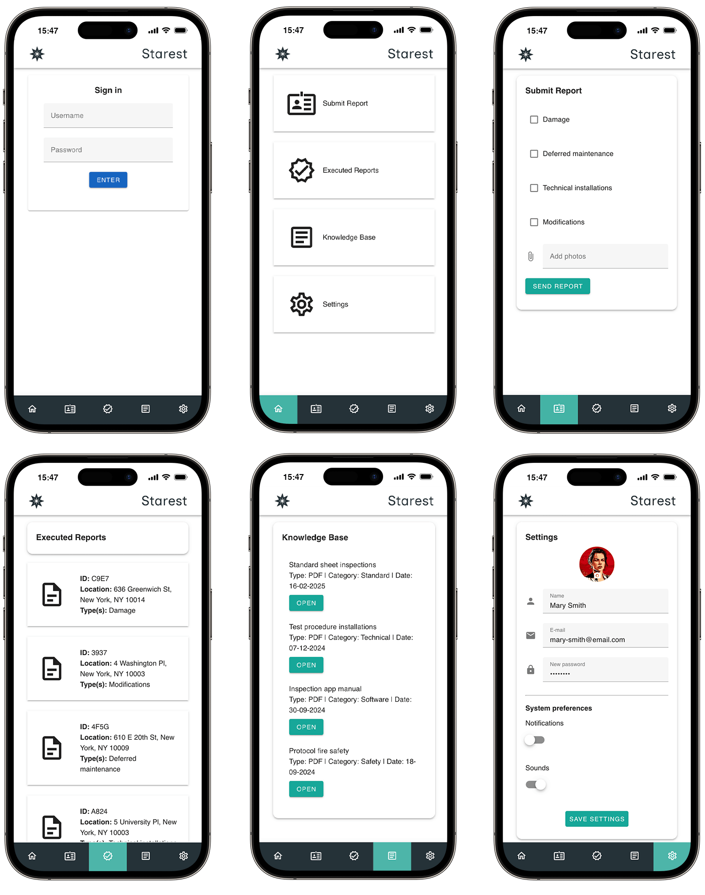
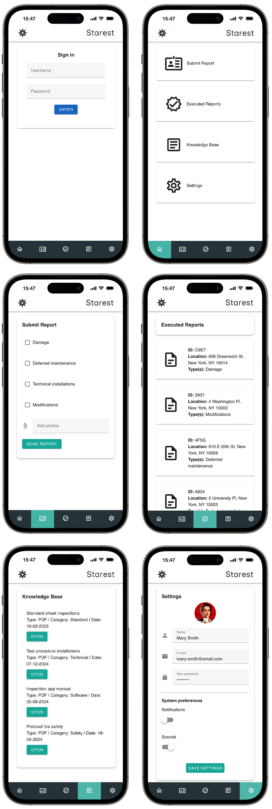

Project
Een mobiele app voor het rapporteren van inspecties

Samenvatting
Ik heb een mobiele applicatie ontwikkeld waarmee inspecteurs rapporten kunnen indienen en beoordelen

Verantwoordelijkheden
Front-End Development
Web Design
Project
Een mobiele app voor het rapporteren van inspecties
Samenvatting
Ik heb een mobiele applicatie ontwikkeld waarmee inspecteurs rapporten kunnen indienen en beoordelen
Verantwoordelijkheden
Front-End Development
Web Design
Concept
Dit project was een afsluitend examen voor mijn front-end development cursus. Het vereiste het bouwen van een mobiele applicatie met behulp van een JavaScript framework, ik koos voor Vue.js. Om de touch-interactie te verbeteren, gebruikte ik Vuetify, terwijl Bootstrap de componenten leverde en Pinia het state management afhandelde.
Ik diende een aantal onderdelen te integreren, namelijk:
- Rapporten indienen
- Uitgevoerde rapporten bekijken via een op maat gemaakte API
- Toegang krijgen tot bestanden in een speciale kennisbank
- Systeemvoorkeuren en profielinstellingen aanpassen
- Gebruikersauthenticatie met behulp van state management
- Naadloze navigatie via routing
Build
Ik heb dit project ontwikkeld door middel van meerdere iteraties, waarbij ik het project voortdurend heb verfijnd om tot het eindproduct te komen. De applicatie is gebouwd met verschillende asynchroon geladen componenten, waardoor het een Single Page Application (SPA) is. Dit verbetert de gebruikerservaring door het elimineren van pagina reloads, wat zorgt voor naadloze navigatie en snellere interacties. Hier een paar interessante functionaliteiten van de code!
 Ik begon met het ontwikkelen van verschillende fundamentele componenten en integreerde ze vervolgens met behulp van routing om logische verbindingen tot stand te brengen, inclusief de onderste navigatiebalk. Later voegde ik de meta-functionaliteit toe om ervoor te zorgen dat gebruikers alleen toegang hebben tot pagina's als ze zijn geauthenticeerd.
Code
-
// Een sectie van het index.js bestand verantwoordelijk voor de routing
import KnowledgeBase from '@/components/KnowledgeBase.vue';
import Settings from '@/components/Settings.vue';
const routes = [
{
path: '/login',
name: 'login',
component: Login
},
{
path: '/',
name: 'home',
component: Home,
meta: { requiresAuth: true }
},
…
Ik heb een "dummy API" gebruikt om de verwerking van JSON-gegevens te simuleren. De gegevens worden opgehaald via een methode die verbinding maakt met de database, de gegevens ophaalt en deze overeenkomstig weergeeft. Gebruikers kunnen vervolgens op een item klikken om de volledige inhoud en gedetailleerde informatie te bekijken. Dit stelt inspecteurs in staat om uitgevoerde rapporten te openen en te controleren.
Code
-
// Functionaliteit om data te 'fetchen' van de API
export default {
name: 'ExecutedReports',
data() {
return {
inspections: [],
selectedInspection: null,
};
},
methods: {
async fetchInspections() {
try {
const response = await axios.get("https://my-json-server.typicode.com/svnderhvrtog/xyz/inspections");
this.inspections = response.data;
console.log("Fetched inspections:", this.inspections);
} catch (error) {
…
// Deel van het data rendering proces
<v-col v-for="inspection in inspections" :key="inspection.id" cols="12">
<v-sheet :elevation="2" class="item-spacing" @click="showInspectionDetails(inspection)">
<v-icon size="64" class="icon-spacing">mdi-file-document-outline</v-icon>
<div>
<div>
<strong>ID:</strong> {{ inspection.id }}
</div>
<div v-if="inspection.damageData && inspection.damageData.damageLocation">
<strong>Location:</strong> {{ inspection.damageData.damageLocation }}
</div>
…
Improve
Rapporten indienen was een functie die kapot ging tijdens de implementatie op mijn live website. Ik heb het echter goed werkend gekregen door een lokaal gehoste API te gebruiken in plaats van de dummy API. De dummy API kan alleen gegevens lezen en opslaan, maar slaat geen nieuwe inzendingen op. In een echt gebruiksvoorbeeld zouden inspecteurs opties kunnen selecteren zoals "Deferred Maintenance", het formulier kunnen invullen, foto's kunnen uploaden en meer.
Nadat de opdracht was afgerond, heb ik het ontwerp verder verbeterd, nieuwe elementen van de huisstijl verwerkt en een aantal bugs opgelost. Voel je vrij om de mobiele applicatie zelf te testen! Ik heb de inloggegevens erbij gezet, zodat je toegang hebt tot alle pagina's.